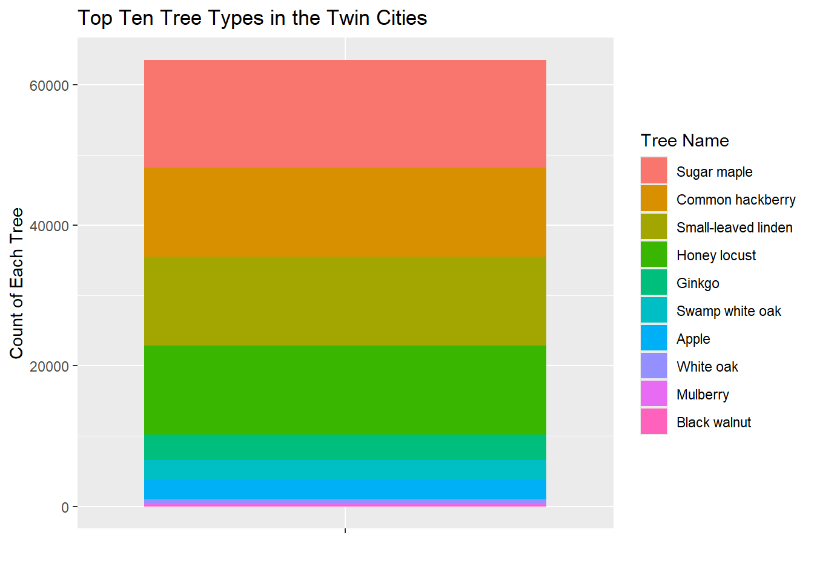
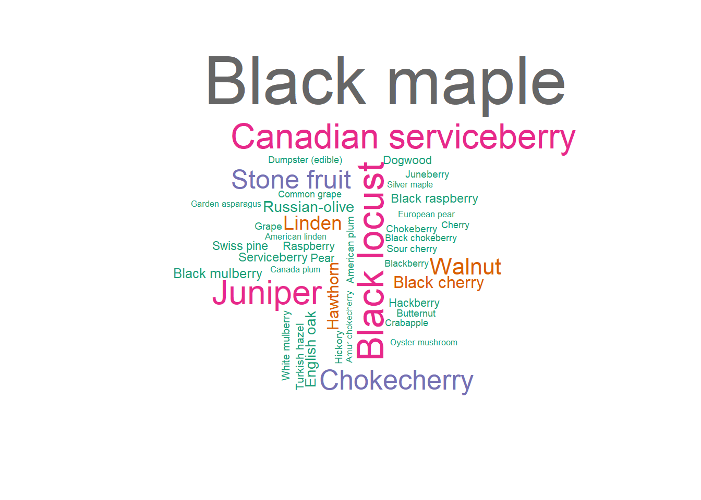

| Plant Name | Count |
|---|---|
| Sugar maple | 15370 |
| Common hackberry | 12675 |
| Small-leaved linden | 12661 |
| Honey locust | 12641 |
| Ginkgo | 3593 |
| Swamp white oak | 2868 |
| Apple | 2762 |
| White oak | 496 |
| Mulberry | 239 |
| Black walnut | 232 |
Source: fallingfruit.org
Authors: Gracia Larsen-Schmidt and Jenna Graff
Knowledge is power, especially when it comes to connecting with our surroundings. In the rapid urbanization which has unfolded over the course of the past 100 years, more and more Americans are living in urban centers. In fact, according to the US Census, the percent of the US population living in an urban area has increased from 50% in 1920 to 80.7% in 2020. With such a dramatic increase in urbanization, Americans have likewise become increasingly distanced from their food sources.
As Americans have migrated to cities, they have migrated away from rural places in which they were far more likely to have an active role in their own food production. While streamlined and industrialized food production has enabled many to pursue a wider variety of lifestyles and employment, outsourcing food production has also had an overwhelmingly negative environmental impact. According to Our World in Data, food production can be attributed to 26% of the world’s carbon emissions. Broken down into four categories, food production emissions are from the supply chain, livestock and fisheries, crop production, and land use. These categories include everything from transportation of food, to the land used for livestock, to methane from cattle. We were shocked to learn that nearly half of habitable land in the world is used for agriculture: either crops or livestock. Given industrialized agriculture’s prominent role in accelerating climate change, we believe considering local methods of accessing food is becoming all the more relevant.
In addition to the global environmental impact, urbanization and the outsourcing of food production has resulted in many Americans now having little knowledge or connection to the the origins of their food. Why does this matter? Well, on a fundamental level, taking an active role in gathering and preparing food encourages people to interact with the nature in their own communities. Spending time in nature has many benefits and has even been shown to increase a person’s mental, emotional, and cognitive health. Furthermore, interacting with the nature within one’s own community can foster a person’s sense of place.
Interacting with nature through food looks a little different in a city setting compared to rural one. In cities, one way in which people can get to know food sources better is through urban foraging, which is the practice of collecting edible and publicly-accessible foods. In the past decade, urban foraging maps online have become available as a helpful resource for exploring forageable plants by location. A prominent online foraging map is the Falling Fruit, which combines municipal data and individual citizen observations to create a comprehensive world map and dataset marking the locations of millions of identified urban foraging locations.
This website is dedicated to exploring what forageable plants are prevalent and where within the Twin Cities.
Data source: fallingfruit.org
This table shows the top ten forageable plants in the Twin Cities and how many of each there are. All of the most common forageable plants in the Twin Cities are trees.
| Plant Name | Count |
|---|---|
| Sugar maple | 15370 |
| Common hackberry | 12675 |
| Small-leaved linden | 12661 |
| Honey locust | 12641 |
| Ginkgo | 3593 |
| Swamp white oak | 2868 |
| Apple | 2762 |
| White oak | 496 |
| Mulberry | 239 |
| Black walnut | 232 |
Source: fallingfruit.org
Visualizing the amount of each tree type relative to each other, we can see that there are four types of forageable trees that are more abundant than all the others in the Twin Cities: sugar maple, common hackberry, small-leaved linden, and honey locust.


You may be wondering how these trees are edible. Here are examples of how each of the top four forageable plant types in the Twin Cities might be used as food:
If you are interested in learning more about what is forageable in the Twin Cities, this word cloud shows 130 other forageable plants (and a dumpster with forageable content) besides the ten most common. They are organized by commonality, so tree types in a larger font were recorded more than the small fonts.

Because the data for the Twin Cities region overwhelmingly comes from the Minneapolis Park Board Tree Inventory, we decided to zero in on Minneapolis. Plotting the locations of the top four forageable plants, we can see that these four plants are fairly evenly dispersed throughout the city. In the center of the map, there is a circular chunk in which very few sugar maples or small-leaved lindens are found. This chunk corresponds with downtown Minneapolis. There appear to be slightly more forageable plants in the bottom half of Minneapolis than the top, and there is a particularly sparse section for all types of trees in the center at the top of the map. This section corresponds to an area of the city dense with railway tracks. The relative lack of forageable plants at these locations is fairly common sense,: firstly, downtown Minneapolis is predominately a corporate and commercial area, which tend to have fewer plants; secondly, trees and other plants are not planted on or near train tracks.
Though there are a few locations on the map in which fewer forageable trees our found, these graphs ultimately demonstrate that within the bounds of reason, a person could access a forageable plant fairly easily within most parts of Minneapolis.
![This graph is a color-coded scatter plot with the points representing coordinate locations. A county map is super-imposed upon the graph. On the x-axis is longitude, which ranges from -93.35 degrees to -93.20 degrees. On the y-axis is latitude which ranges from 44.85 degrees to 45.05 degrees. This graph plots the locations of 5000 randomly selected foragable plants in the Twin Cities. The colors represent the four most common tree types. The graph shows that the four tree types tend to be found in the same locations in the city, although there is an upper middle section that is less populated by all four types.](index_files/figure-html/unnamed-chunk-8-1.png)
![This graph is a color-coded and faceted scatter plot with the points representing coordinate locations. A county map is super-imposed upon the graph. The graphs are color coded and faceted by the four most common forageable tree types in the Twin Cities: common hackberry, honey locust, small-leaved linden, and sugar maple. On the x-axis is longitude, which ranges from -93.35 degrees to -93.20 degrees. On the y-axis is latitude which ranges from 44.85 degrees to 45.05 degrees. The graph plots the locations of 5000 randomly selected foragable plants in the Twin Cities. The graph shows that the four tree types tend to be found in the same locations in the city, although there is an upper middle section that is less populated by all four types.](index_files/figure-html/unnamed-chunk-9-1.png)
This project sought to investigate what plants forageable in the Twin Cities and where they can be found. As explored above, there are four plants which make up the vast majority of forageable plants in the Twin Cities. These plants are the sugar maple, the small-leaved linden, the honey locust, and the common hackberry. These plants can be found almost all over the Twin Cities. No, seriously, you can actually use the plotted coordinates to find the trees! There were so many observations of trees in Minneapolis and across the US that the dataset we used made R keep crashing! If anything, this shows how numerous these trees are, and how easy they are to find if you are looking for them. We enjoyed learning about the top four trees specifically, and the ways that they are edible – plus, after reading their descriptions, we recognize places that these plants are on our college campus. If you are intentional about looking for edible trees, they can be found even in urban and suburban areas.
Finally, we wish to emphasize that connecting with local nature through food is a practice of seeing nature as a part of your community. As we note in the introduction, the larger dataset from which we pulled our Twin Cities data is a compilation of municipal data and citizen entries. When individuals add the locations of the forageable plants near them, they have the opportunity to leave a comment or note. Here are some of our favorite notes, which begin to sum up the excitement, joy, love, and humor that can be found in the process of getting to know the nature near you.
We hope you too can find forageable plants to love, or at the very least, eat.